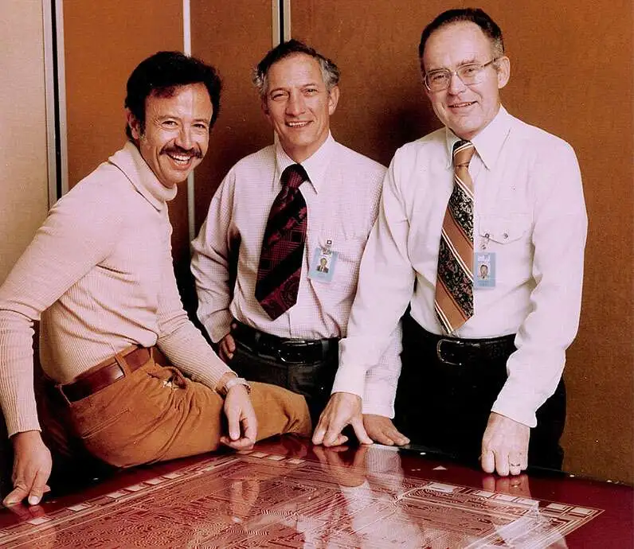
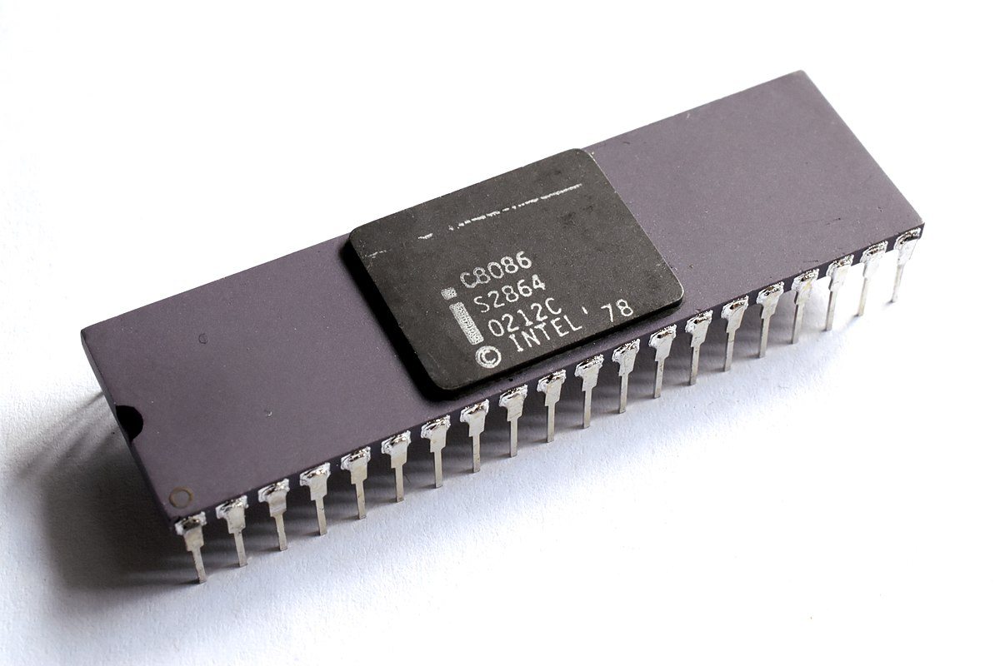

1968

Intel is Founded
Robert Noyce and Gordon Moore establish Intel.
1971

First Microprocessor
Intel introduces the 4004, the world's first microprocessor.
1978

8086 Processor
Intel launches the 8086 processor, leading to the x86 architecture.
1993

Pentium Brand
The Pentium processor is introduced, becoming a household name.
2006
Peak GHG Emissions
This year marks Intel's highest annual greenhouse gas emissions for operations. Over subsequent years, Intel invests heavily in chemical abatement, renewable energy, and energy-efficient manufacturing to reverse this trend.
2020
RISE Strategy
Intel launches its RISE (Responsible, Inclusive, Sustainable, Enabling) strategy and 2030 goals, aiming to drive industry-wide progress on climate action, water stewardship, and waste reduction.
2022
Net-Zero By 2040
Intel announces its commitment to achieve net-zero greenhouse gas emissions (Scope 1 and 2) across its global operations by 2040, building on years of environmental initiatives.
2023
Renewable Electricity
The company achieves 99% renewable electricity usage worldwide, helping to drastically lower carbon emissions and driving progress toward Intel's long-term sustainability goals.
2024
Sustainability Summit
Intel hosts its first Sustainability Summit, uniting suppliers, government officials, and industry leaders to collaborate on next-generation sustainable semiconductor manufacturing.